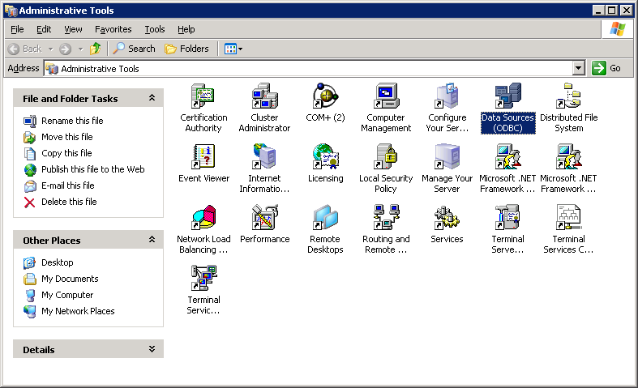
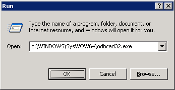
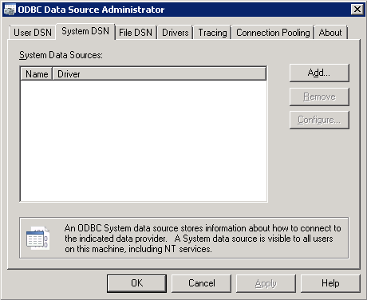
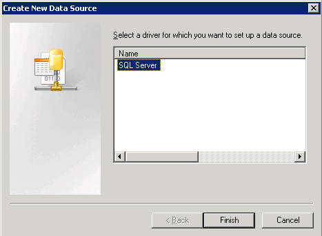
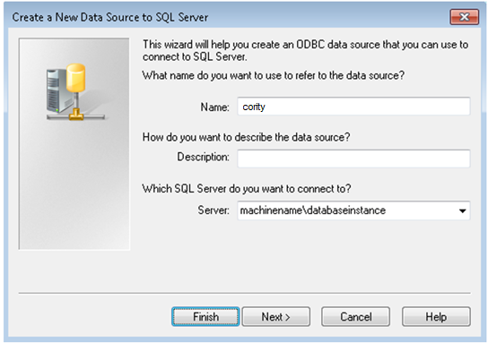
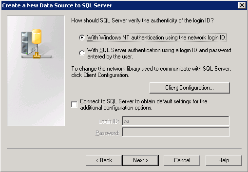
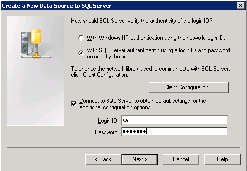
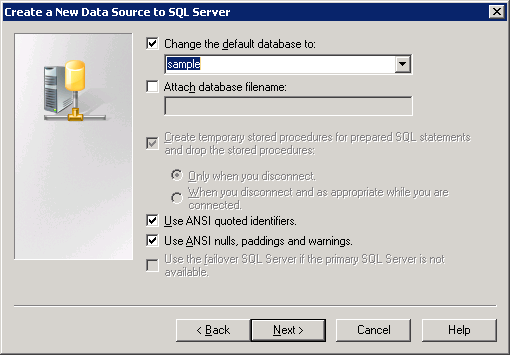
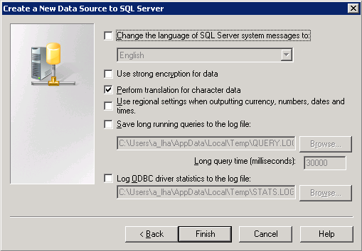
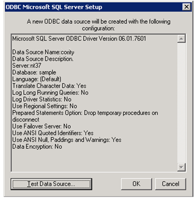

If your web server is 32-bit, on the web server, under Control Panel, Administrative Tools select Data Sources (ODBC).

If your web server is 64-bit, on the web server, click Start/Run, type in c:\WINDOWS\SysWOW64\odbcad32.exe and click OK.

From the System DSN tab, click Add.

Select the SQL Server and click Finish to continue.

Give the data source a name such as cority, select your database server, and click Next to continue.

Provide credentials that have access to the database.
If your user has access rights to the database and wants to use a trusted connection, select “With Windows NT authentication using the network login ID”.

Otherwise, select “With SQL Server authentication using a login ID and password entered by the user”. It is recommended that you use “sa” at this point to ensure there are no problems with security. Click Next to continue.

Select the Cority database as the default database and click Next to continue.

Click Finish to continue.

You can now test the connection by clicking Test Data Source.

If the test is successful you will receive a message similar to below. Click OK to continue.